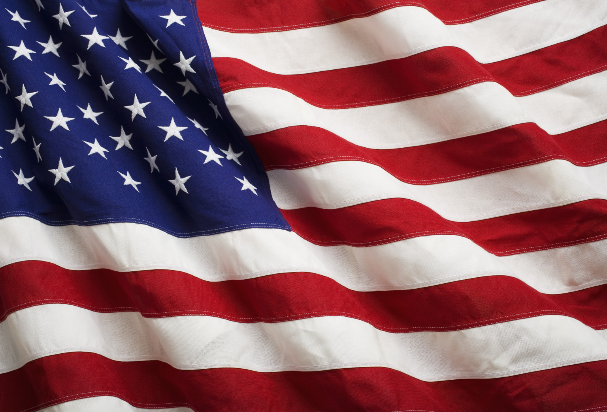
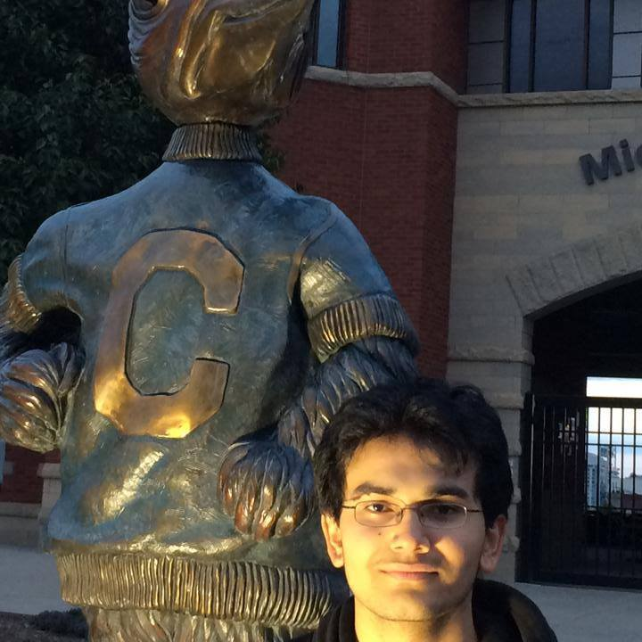

From left to right: My Brother, Father, Mother, and I.
Hi everyone and welcome to my page! My name is Pranit Singh and I am currently a junior at University of Nebraska Omaha. Before I introduce and talk about myself, I want to you to meet the rest of my family members! I won't go too much in depth though because my second page will be about the rest of my family members in much more detail. With that being said, I do want to give a little sneak peak into the rest of what my website was about so it's time all of you meet the rest of my family members!
My father's name is Pravin Singh and my mother's name is Kiran Singh. I have one older sibling, Pratik Singh. My parents have both made great sacrifices in order for my brother and I to have a better life with opportunities that they never had. Back in my hometown of Nepal, my mother was a stay-at-home mother who really took care of the rest of the household. My father, on the other hand, was a chief of a bank in which he was it's president. Both of my parents are extremely adventrous and have traveled all over Asia and even into Europe. Last but not least, my brother has always wanted to be a soccer player and looks at soccer superstar Cristiano Ronaldo as his role model and someone who he emuates to be one day
I know this isn't a lot but it definitely is a good intro to my family! In the rest of my pages, I will go more in depth and talk about each of them with greater details and descriptions.
My Childhood!
I was born in Janakpur, Nepal on April 3, 1996. It is a poor country located in Asia with a population of roughly 28 million people. At age three, I started pre-school and made my way up through first grade. Going to school there was quite tough because of how strict it was. Students were punished(including myself) countless times with rulers and sticks for various reasons, the main ones being questioning the professor, not listening to them, and having the gull to interrupt the professor. So the culture that I grew up in was a lot different; it was much tougher (psychologically) because of the negativity that I was surrounded by from not only being punished by the professor, but also being bullied bymy fellow peers for not being "outgoing."
The National Flag of Nepal.
Nepal was a very poor country with a small population. Food was tough to get by because there were no guarantees that there was going to be on the table. Water, too, required traveling miles to the nearest place where there were fresh water. I was one of the lucky ones, though, because for many people, there were homeless. It was tough going outside, seeing people with coins in cups, begging for money and food. This was not the world I had envisioned, but one that I think I started to accept and do something about.
As a child, my hobbies and interests included traveling, reading books, and playing tag withfriends. I was extremely competitive so whenever I competed against my friends in a race of sprints, soccer, or even spelling, I always wanted to win. I also loved to dream about anything and everything! I had this curiosity about me of the world we live in and as I grew older, this has never really went away. I've been fascinanted and awe-inspired in which the world we live in from how the universe came to be in the first place and how we, humans, came to be. Thus, my love for numbers and science, especially physics, never went away and even today, I still pursue the field with great curiosity and an open mind.
I am forever grateful in living in Nepal during the seven years that I had because it really molded me into the person I am today. Not only due to bullying from my fellow peers, but also living in a place in which you had to fight and claw everyday to make ends meet and literally survive taught methat life isn't what I had always envisioned of being luxurious. More importantly, it made my appreciate my parents that much more because of how hard they worked in making sure there was food on the table everyday and that we had shelter. So, although I've lived in America now for more than half my life, I alwas identify myself as a Nepali first because in order to understand the person I am today, you have to go back to my childhood first.
Hello America!
Coming to America in 2004 forever changed the life of my Family and I. How it happened though was even a script that none of my family members could have predicted. More on that in future paragraphs but it's amazing to think of the wonderful opportunities that can show up at any time. I mean, I was living in Nepal, a country plagued by poverty and homelessness and now, here I am in America, living the dream as they say. However, there is also this sort of guilty feeling that I've always had in leaving the rest of my family members (i.e. aunt, uncles, grandfather, grandmother, etc.). While, I have a home and a job with good education, I know the same cannot be said for them and that is quite agonizing to say the least.
I can still remember the day like it was yesterday. I came home from school and it was around 4:30 p.m. My mother had made me supper and after eating, I was about to go to bed when all of a sudden, I hear yelling coming from my gate and immediately I recognized who it was: my father. I had never seen him that excited: he was jumping up and down and yelling "America!America!" I asked him what's going on to which he replies, "We are going to America!!" So, to sum it up, my father received a VISA to come to America, given to one family each year. It was literally like winning the lottery and we were thefamily chosen, thanks to the fact that my father was chief of his bank. Little did I realize at that time that my life would change forever in ways I never expected but am thankful for.

The National Flag of the United States of America.
My family and I came to America for a better life. It also presented us with many opportunities that enabled us to be successful. We chose to live in Nebraska, specifically, because we had our cousins. They came to America a few years ago before us so they helped us greatly from giving us a place to stay while we settled. Along with the rest of my family, we had little to no background in the english language and in the American culture so it was tough to get used to. Over time though, my parents started working and my brother and I started to going to school, getting rid of the anxiousness and bringing hapiness to our life.
I started in third grade at Oakdale Elementary school. It was the choice due to location andconvenience. I remember my first day, my dad taking me to school. I was petrified because this was a new environment for me that I simply was not used to. Not only that, I barely knew english so how was I going to be successful in class! Not only that, but they put me in third grade so there was barely any time to get situated. Nonetheless, I am extremely thankful for my wonderful teachers and students who really welcomed me with open arms. While in recess, few of my peers would come up to me and include me inplaying kickball. The school also provided me with an ESL teacher for the rest of my elementary years through sixth grade. So these little gestures really made me feel comfortable and soon I became used to the American culture and became fluent at speaking English.
My Adulthood!

Me during my freshman year at Creighton University's Soccer stadium posing with the mascot, Billy Blujay.
After I was done with elementary school, I was planning on going to Westside Middle School. However, as fate always seems to intervene for the better, my family and I move here to Papillion due to the fact that housing was much more affordable. Thus, I attended LaVista Jr. High before going to Papillion-LaVista High School for the rest of my four years.
I am currently going to UNO, majoring in Economics (BA) with a minor in Computer Science. I didn't always know what I wanted to do. During my high school years, I took part in various symposiums and academies regarding health care. I became gratly interested in it and pursued the field further by volunteering in hospitals and even job shadowing. However, when I went to Creighton University during my freshman year before transferring, I came to the realizing that this is something that I definitely did not want to do. Thus, I transferred to UNO and felt a little demoralized and a little disappointmentcast over me, knowing I picked the wrong career. However, thanks to the wonderful advisors along with the people I met here, I am now on the right path to success!
Moving on to my hobbies and interests, I am much less outgoing today compared to my childhood. However, many of the interests that I had in my childhood still stay with me, some of which are: dreaming about the universe and our existence, hanging out with my close friends, and reading books. I love to go the movies and travel with my family on the weekends. We love to road trips so whether it's going on a two day journey to California or traveling a few hours to Iowa to see my cousins, traveling hasand will always stay with me.